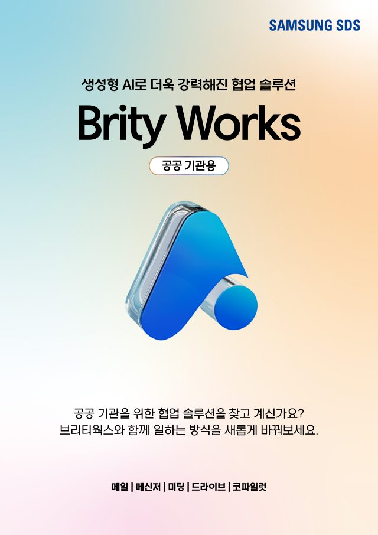
먼저 보세요삼성SDS · 브리티웍스 공공 브로슈어 (2025, A4 인쇄용) · 1쪽
광택 나는 3D 오브젝트 하나를 부드러운 그라데이션 위에 크게 놓고, 아래에 질문으로 끝맺습니다('…찾고 계신가요?').
사업성장연구소라면홈페이지의 파란 유리 조형을 같은 자리에. 질문은 '매출, 뭘 해야 할지 막막하다면.'
자료 원본 페이지 ↗삼성SDS·카카오·네이버가 고객에게 실제로 나눠 주는 소개서와 리플릿 10종을 쪽 단위로 뜯어봤습니다. 그중 우리 책자에 바로 쓸 28쪽을 여섯 묶음으로 나눴고, 각 쪽마다 '사업성장연구소라면 어떻게 쓸지'를 붙였습니다. 맨 아래에 이 레퍼런스대로 다시 만든 책자 v2가 있습니다.
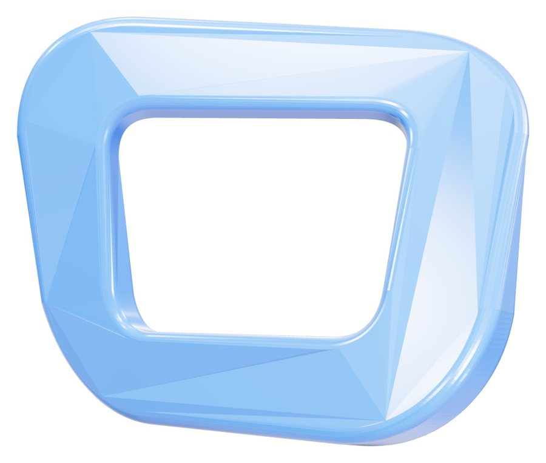
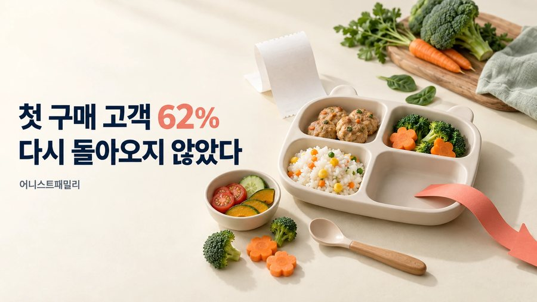
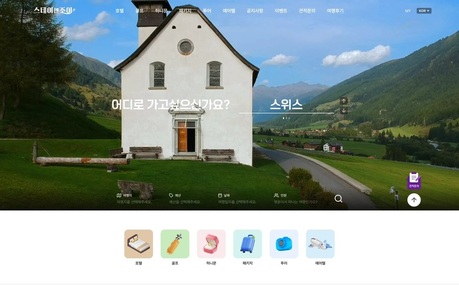
새로 찍거나 사지 않아도, 홈페이지와 프로젝트 일지에 쓴 것만으로 충분합니다.
홈페이지 첫 화면의 3D 조형. 삼성SDS 표지의 오브젝트 역할.
찾은 것·한 일을 기록해 공개한 실제 사례와 사진.
여행·꽃배달·타이어·창고·ERP·매칭 앱까지 직접 만든 것.
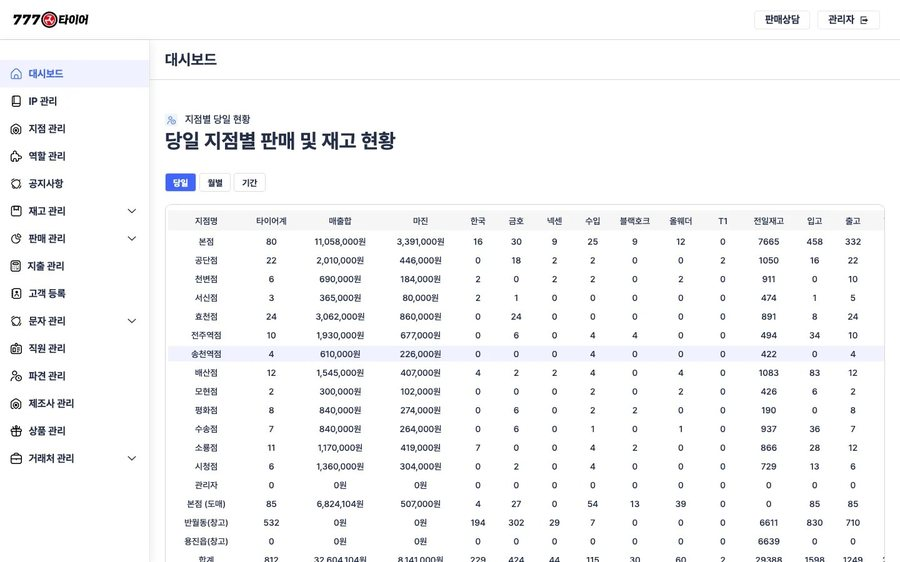
실제 화면만든 서비스의 실제 화면 — 숫자 대신 '보여 줄 수 있는' 증거.
광고 소재·성과 대시보드까지 우리 손으로 만드는 팀.
v2에서 이 세 가지부터 고쳤습니다.
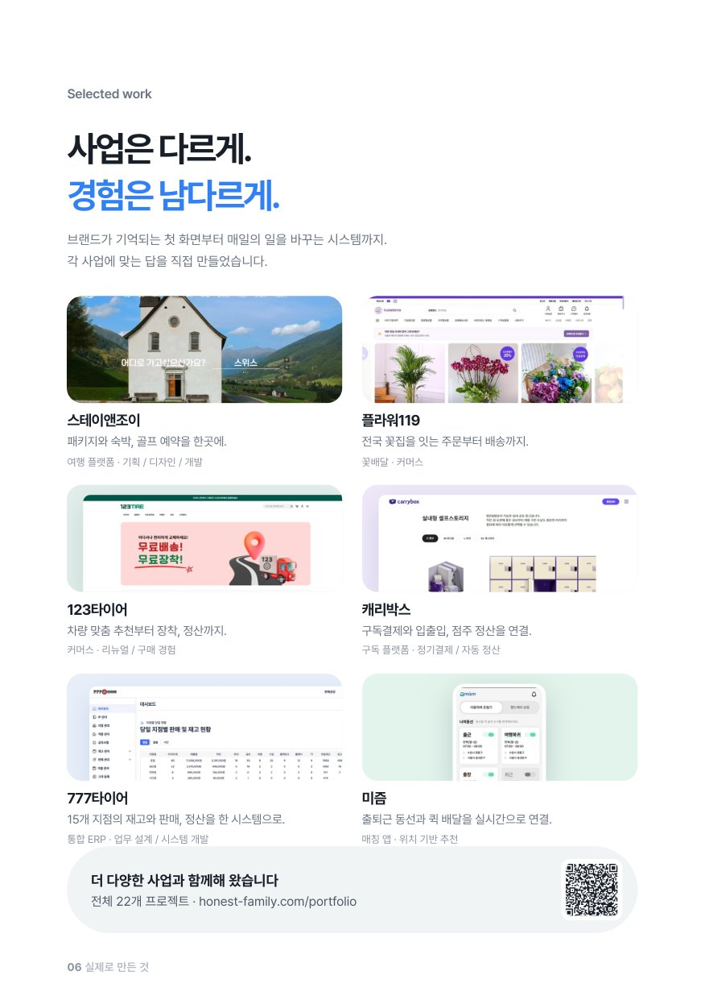
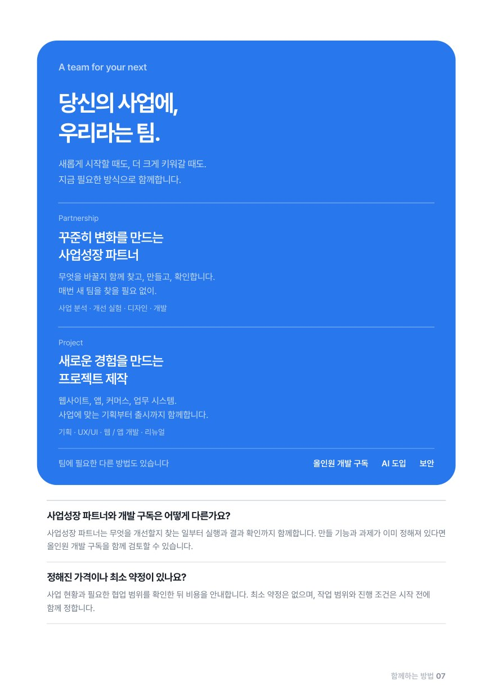
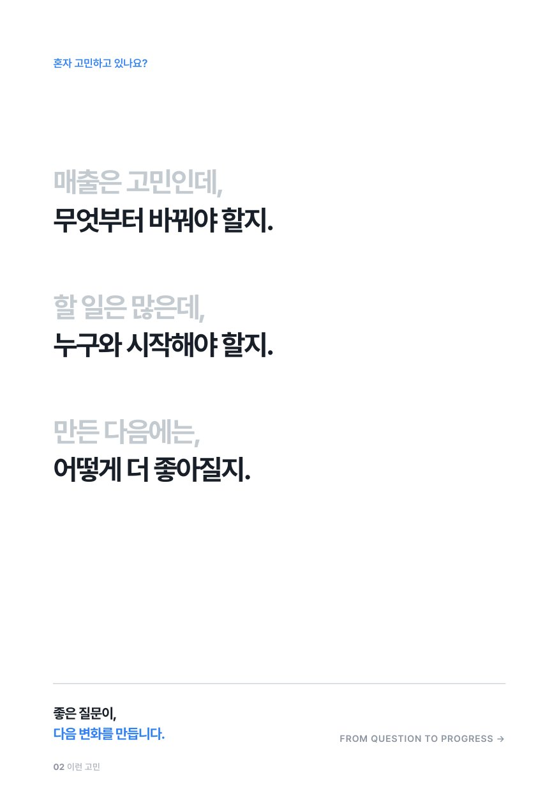
삼성SDS는 표지를 '…찾고 계신가요?'로, 네이버웍스는 '왜 도입해야 할까요?'로 엽니다. 고객이 자기 상황을 대입하게 만드는 첫 장치입니다.
카카오는 89%·2,916만 같은 숫자를 검은 칸 하나에 하나씩 둡니다. 우리는 60여 개·1팀·24시간, 그리고 뽀뽀뜨의 62%.
삼성SDS·카카오 모두 마지막을 자주 묻는 질문과 연락처로 맺습니다. '매출을 보장하나요?'처럼 망설이는 이유를 먼저 풀어 줍니다.
들어 보는 순간 '대기업 자료' 같다는 인상은 표지에서 정해집니다. 오브젝트 하나, 색 하나, 문장 하나.

먼저 보세요삼성SDS · 브리티웍스 공공 브로슈어 (2025, A4 인쇄용) · 1쪽
광택 나는 3D 오브젝트 하나를 부드러운 그라데이션 위에 크게 놓고, 아래에 질문으로 끝맺습니다('…찾고 계신가요?').
사업성장연구소라면홈페이지의 파란 유리 조형을 같은 자리에. 질문은 '매출, 뭘 해야 할지 막막하다면.'
자료 원본 페이지 ↗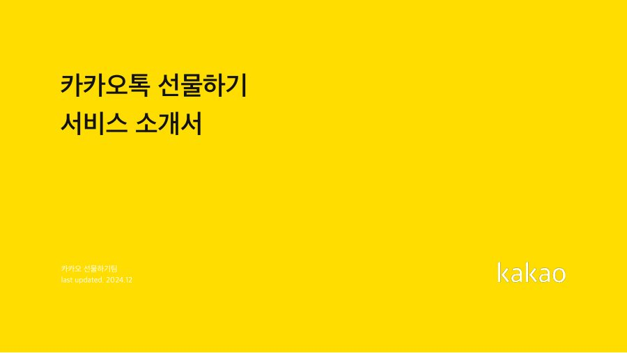
카카오 · 카카오톡 선물하기 서비스 소개서 (2024) · 1쪽
브랜드 색 한 가지로 표지 전체를 칠하고 제목 두 줄만 둡니다. 군더더기가 없어서 오히려 비싸 보입니다.
사업성장연구소라면파란색 한 가지로 칠한 표지 — 3안으로 남겨 둡니다.
자료 원본 페이지 ↗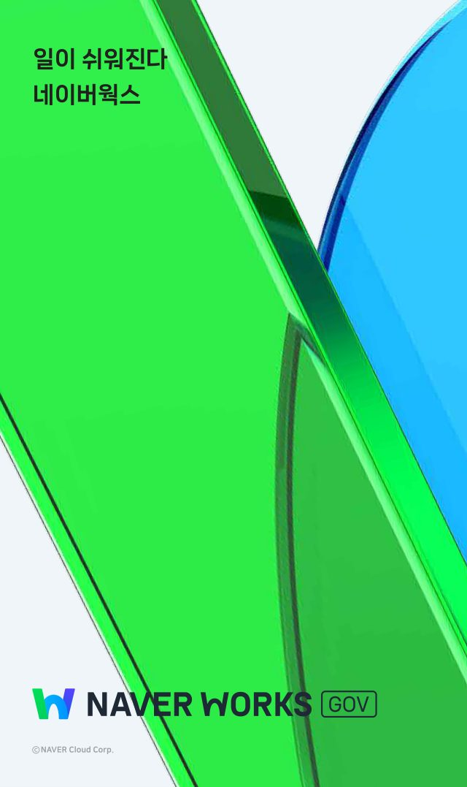
네이버클라우드 · 네이버웍스 공공 리플릿 (2026, 접지) · 1쪽
'일이 쉬워진다'처럼 고객이 얻는 결과를 한 줄로 약속하고, 이름은 그 아래 작게.
사업성장연구소라면'막연함이 끝납니다'처럼 결과를 먼저, 이름은 나중에.
자료 원본 페이지 ↗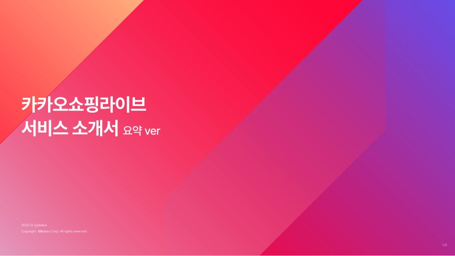
카카오 · 카카오쇼핑라이브 서비스 소개서 요약 (2024) · 1쪽
강한 그라데이션과 큰 제목, 나머지 정보는 구석에 아주 작게.
사업성장연구소라면표지에는 우리 소개를 넣지 않고 질문 하나만.
자료 원본 페이지 ↗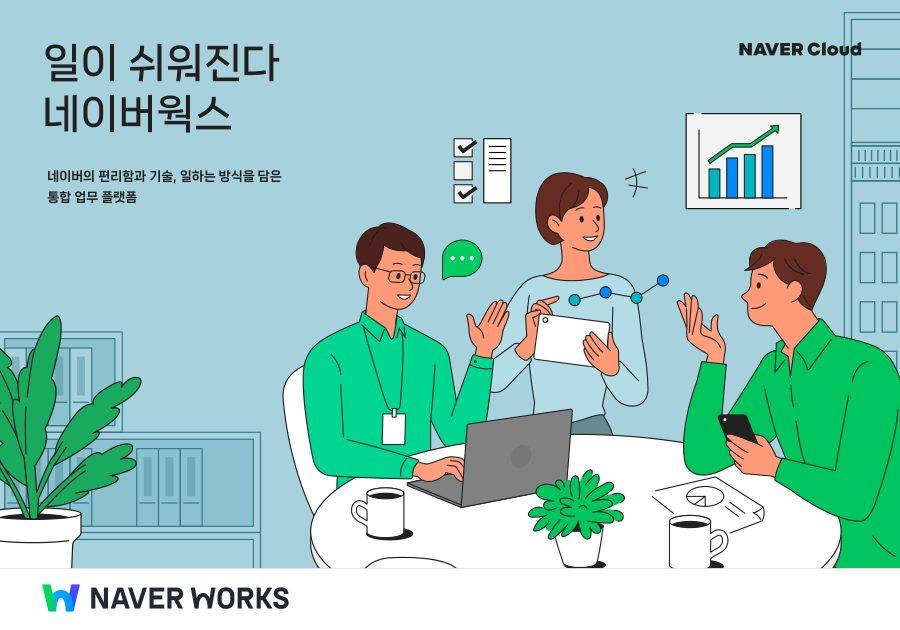
네이버클라우드 · 네이버웍스 서비스 소개서 (2026) · 1쪽
제품 화면 대신 '쓰는 사람들의 장면'을 그림으로 보여 줍니다.
사업성장연구소라면대표님의 고민 장면 — 뽀뽀뜨 일지에 쓴 사진처럼 장면이 있는 이미지.
자료 원본 페이지 ↗기능보다 먼저 '내 얘기네' 하게 만드는 장. 대기업 자료도 첫 장은 질문이나 장면으로 엽니다.
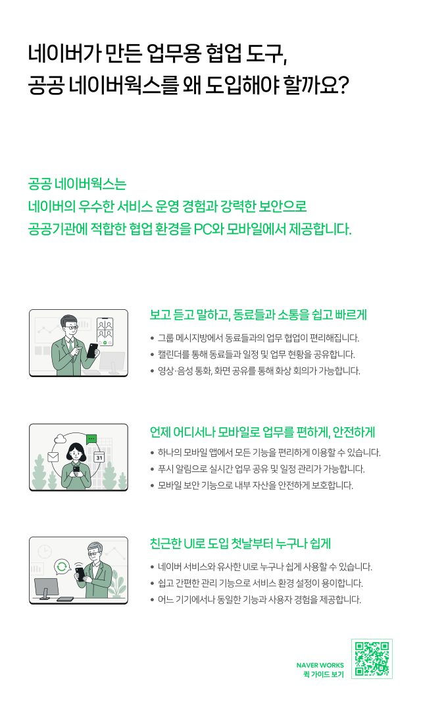
먼저 보세요네이버클라우드 · 네이버웍스 공공 리플릿 (2026, 접지) · 2쪽
'왜 도입해야 할까요?'라는 질문에 이유 세 개를 그림과 함께 답합니다.
사업성장연구소라면'왜 사업성장연구소일까요?' — 막연함을 할 일로 · 혼자가 아닌 실행 · 숫자로 확인.
자료 원본 페이지 ↗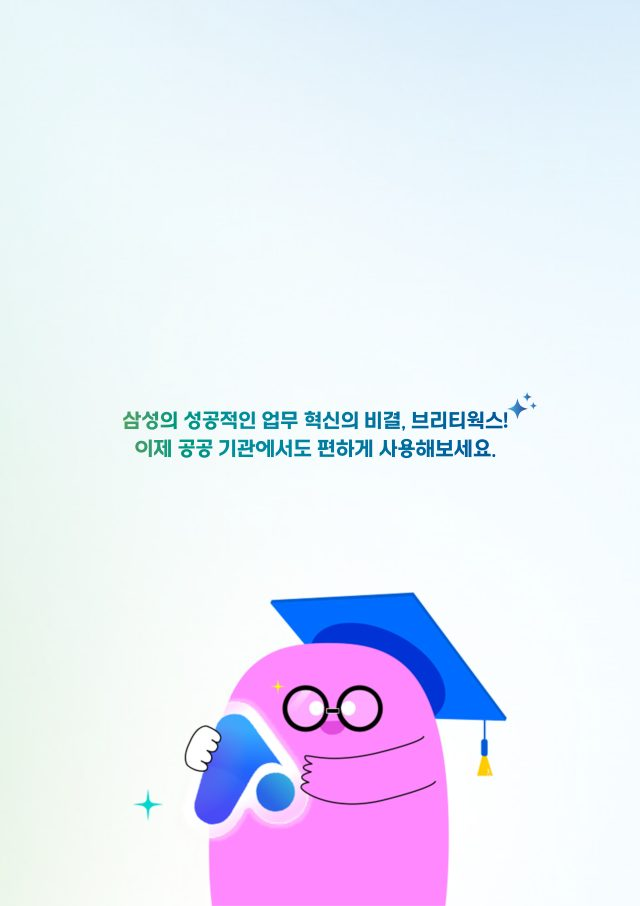
삼성SDS · 브리티웍스 공공 브로슈어 (2025, A4 인쇄용) · 2쪽
한 쪽에 공감 문장 하나와 캐릭터만. 정보 없이 숨을 고르게 하는 장.
사업성장연구소라면대표님이 주신 세 줄('매출은 고민인데, 뭐를 개선해야 할지 막막하고.')만 크게.
자료 원본 페이지 ↗카카오 · 카카오톡 선물하기 서비스 소개서 (2024) · 3쪽
기능 설명 전에 감정이 담긴 사진 한 장과 짧은 문장('마음을 전할 땐').
사업성장연구소라면뽀뽀뜨 일지 사진처럼 '사업의 장면'이 보이는 이미지를 공감 장에.
자료 원본 페이지 ↗하는 일을 같은 틀로 반복해서 보여 주면, 고객이 자기 사업에 대입해 읽습니다.
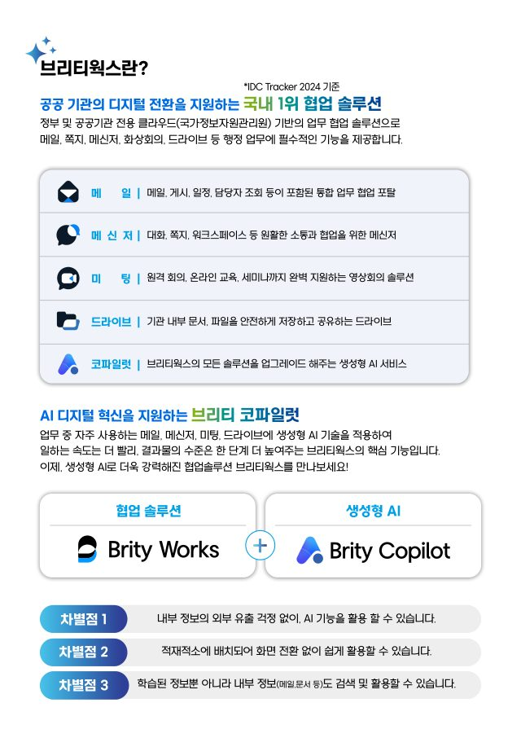
먼저 보세요삼성SDS · 브리티웍스 공공 브로슈어 (2025, A4 인쇄용) · 3쪽
'브리티웍스란?' 한 문장 정의 + 기능 다섯 개를 표 한 장에 요약합니다.
사업성장연구소라면'사업성장연구소란?' 한 문장 + 분석·개발·디자인·마케팅 네 칸.
자료 원본 페이지 ↗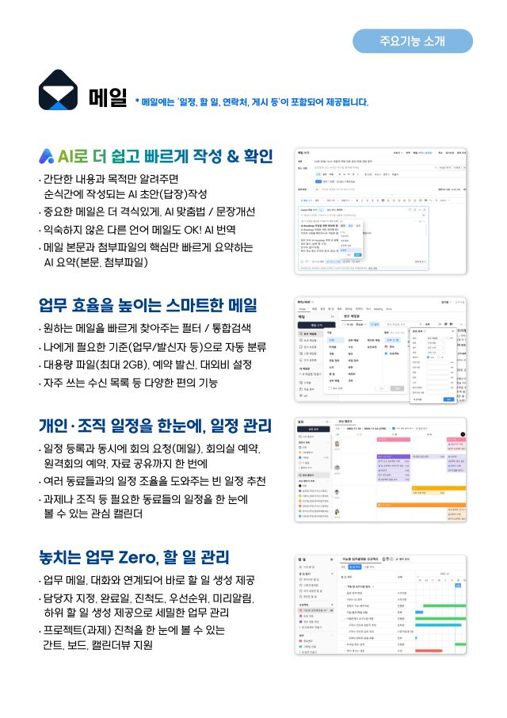
삼성SDS · 브리티웍스 공공 브로슈어 (2025, A4 인쇄용) · 4쪽
기능마다 아이콘 → 효과 제목 → 할 수 있는 일 → 실제 화면, 같은 순서로 반복합니다.
사업성장연구소라면네 칸마다 '무엇이 좋아지는지' 한 줄 + 실제로 해 주는 일 세 가지.
자료 원본 페이지 ↗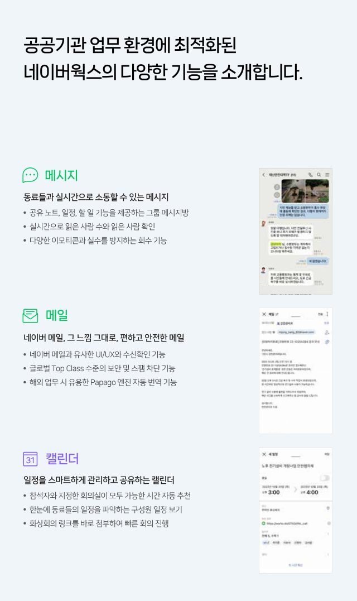
네이버클라우드 · 네이버웍스 공공 리플릿 (2026, 접지) · 4쪽
기능을 아이콘 격자로 늘어놓되, 제목은 기능 이름이 아니라 쓰임새로.
사업성장연구소라면'GA4 세팅'이 아니라 '어디서 손님이 빠지는지 보이게'.
자료 원본 페이지 ↗카카오 · 선물하기 광고상품 소개서 (2025) · 11쪽
상품마다 '어디에, 어떻게 보이나'를 같은 틀로 반복해 비교가 쉽습니다.
사업성장연구소라면실행 메뉴를 같은 틀(무엇을 → 어떻게 → 무엇이 남나)로.
자료 원본 페이지 ↗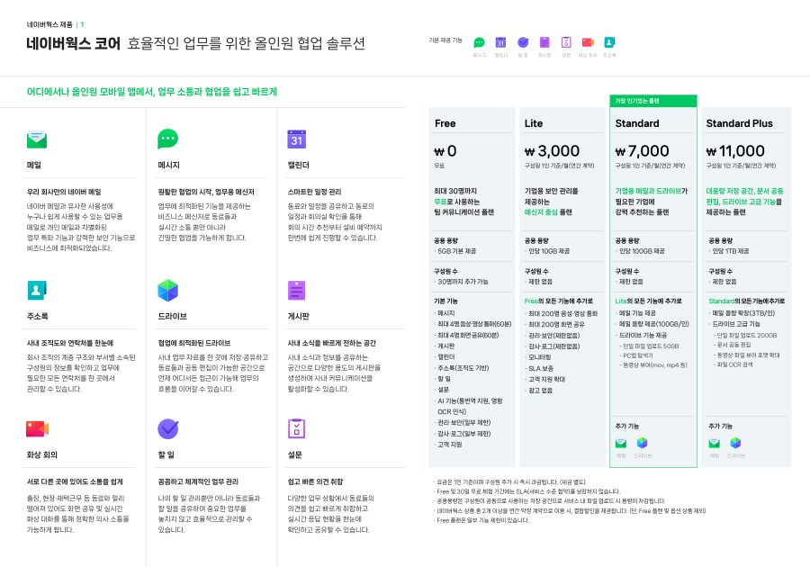
네이버클라우드 · 네이버웍스 서비스 소개서 (2026) · 3쪽
기능 대신 효과를 제목으로 쓰고, 표로 한눈에 비교합니다.
사업성장연구소라면월간 리포트를 '한 일 · 달라진 숫자 · 다음 할 일' 표 한 장으로.
자료 원본 페이지 ↗'이 회사 믿어도 되나'에 대한 답. 대기업도 숫자는 한 쪽에 하나씩, 크게 둡니다.
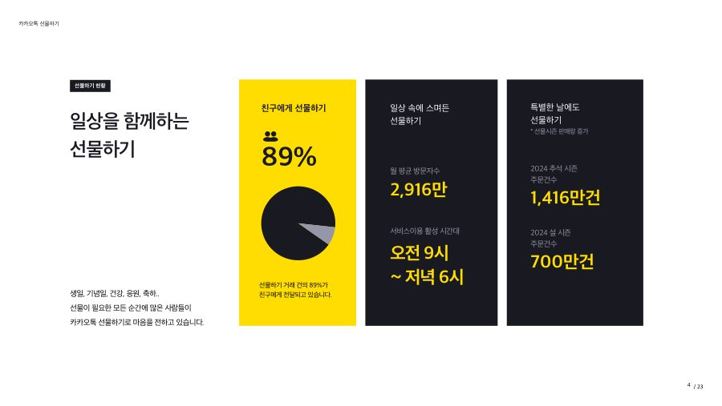
먼저 보세요카카오 · 카카오톡 선물하기 서비스 소개서 (2024) · 4쪽
어두운 칸 하나에 숫자 하나. 89%, 2,916만 같은 숫자를 작은 설명과 함께 크게.
사업성장연구소라면60여 개(만든 서비스) · 1팀(개발~마케팅) · 24시간(대표 직접 회신)을 같은 칸으로.
자료 원본 페이지 ↗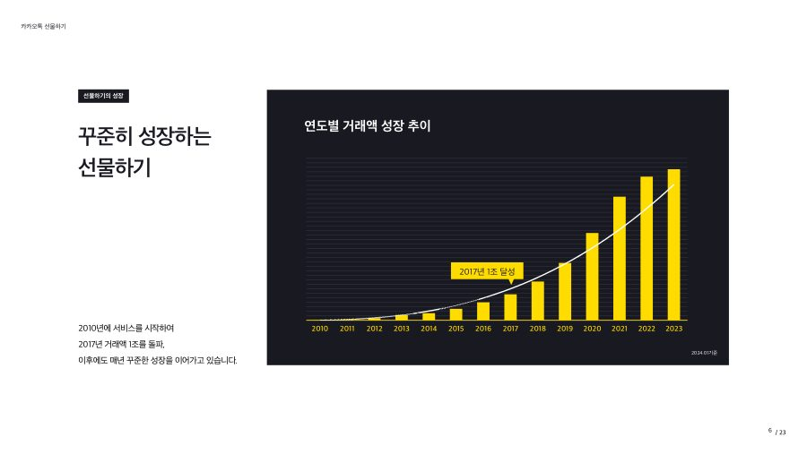
카카오 · 카카오톡 선물하기 서비스 소개서 (2024) · 6쪽
성장 그래프 한 장으로 '꾸준히 성장한다'를 증명합니다.
사업성장연구소라면다음 판에는 이번 주 광고 실험 결과 그래프를 넣을 자리.
자료 원본 페이지 ↗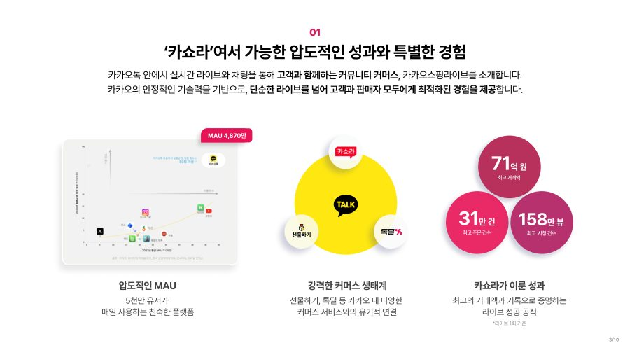
카카오 · 카카오쇼핑라이브 서비스 소개서 요약 (2024) · 3쪽
성과 숫자를 원 안에 크게, 근거 화면을 옆에.
사업성장연구소라면62% 같은 '찾아낸 숫자'를 원 안에.
자료 원본 페이지 ↗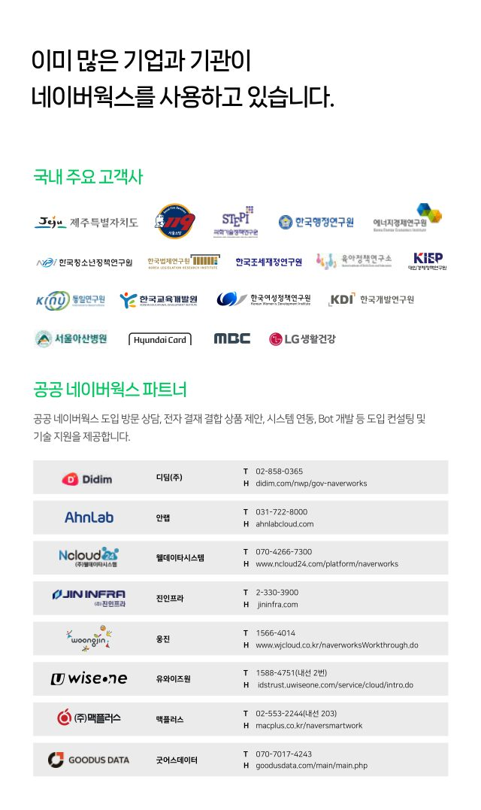
먼저 보세요네이버클라우드 · 네이버웍스 공공 리플릿 (2026, 접지) · 3쪽
'이미 많은 기업과 기관이 사용하고 있습니다' — 고객사 로고와 파트너 연락처를 한 쪽에.
사업성장연구소라면'이미 함께한 사업자들' — 스테이앤조이·플라워119·123타이어·777타이어 등 이름을 한 쪽에.
자료 원본 페이지 ↗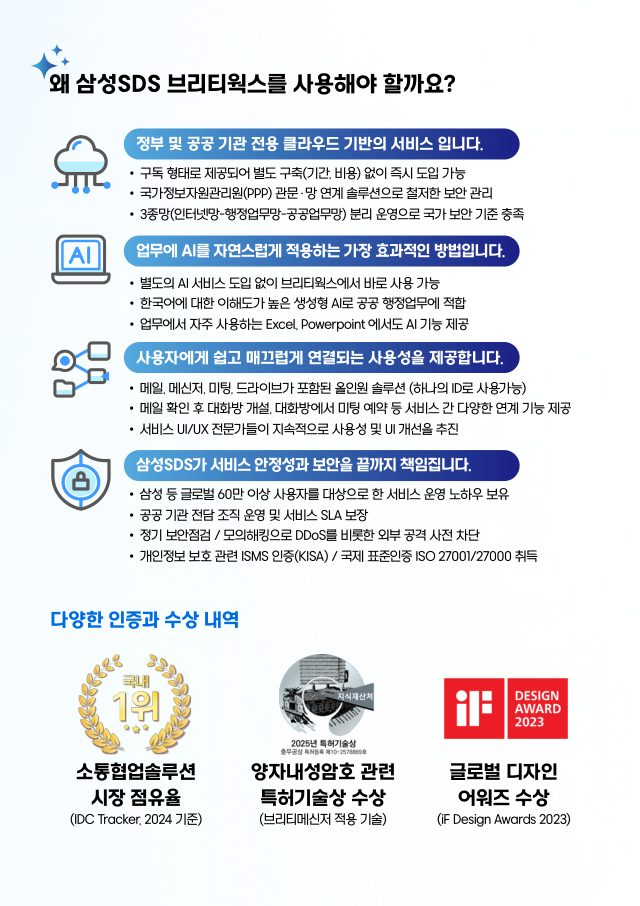
삼성SDS · 브리티웍스 공공 브로슈어 (2025, A4 인쇄용) · 9쪽
'왜 삼성SDS여야 할까요?' 이유 네 개 + 수상·인증 배지를 한 줄로.
사업성장연구소라면이유 세 개 + (있다면) 받은 인정·인증을 한 줄로.
자료 원본 페이지 ↗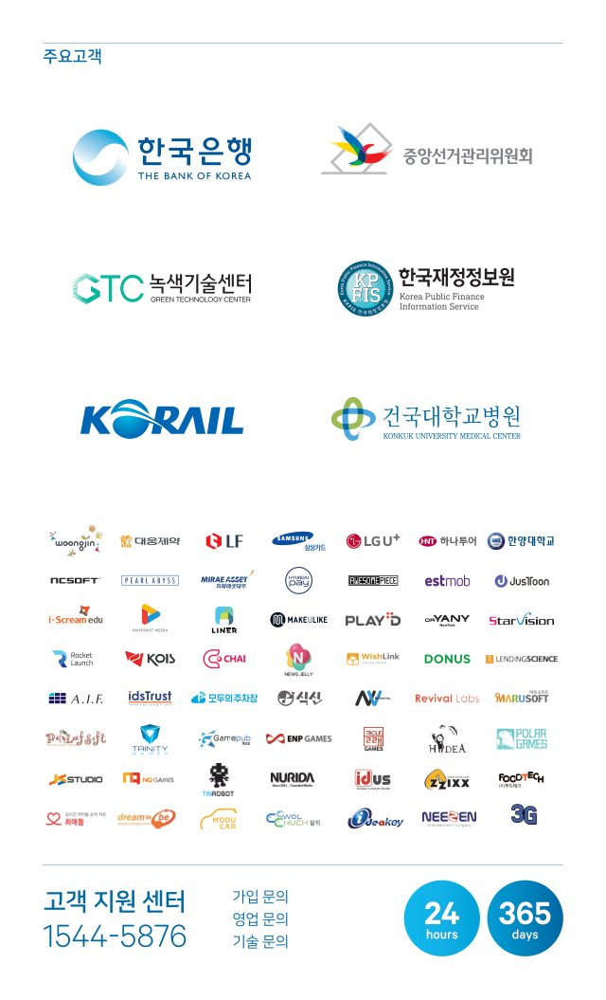
네이버클라우드 · 공공기관용 리플릿 · 5쪽
마지막 쪽을 고객사 로고 모음과 고객센터로 마무리합니다.
사업성장연구소라면포트폴리오 쪽 아래에 함께한 곳 이름 모음.
자료 원본 페이지 ↗웹처럼 나열하지 않고 '무엇을 찾았고, 무엇을 했는지'를 이야기로. 깊이는 QR로 넘깁니다.
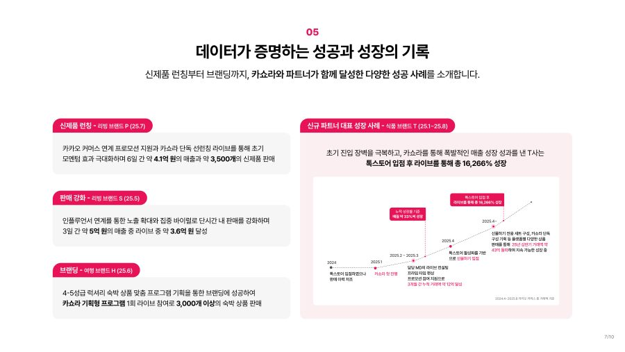
먼저 보세요카카오 · 카카오쇼핑라이브 서비스 소개서 요약 (2024) · 7쪽
'데이터가 증명하는 성과와 성장의 기록' — 사례마다 문제 → 한 일 → 숫자.
사업성장연구소라면뽀뽀뜨: 찾은 것(62%) → 한 일(리뷰·식단·재구매) → 지금.
자료 원본 페이지 ↗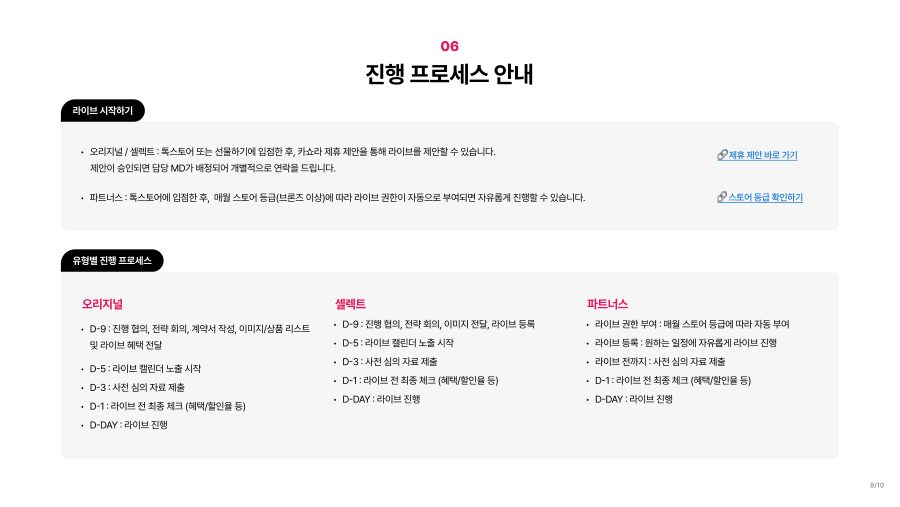
카카오 · 카카오쇼핑라이브 서비스 소개서 요약 (2024) · 8쪽
진행 프로세스를 단계별 표로. 무엇을 준비하면 되는지까지 적습니다.
사업성장연구소라면진단 → 결정 → 실행·확인, 대표님이 준비할 것(데이터 접근 권한 등)까지.
자료 원본 페이지 ↗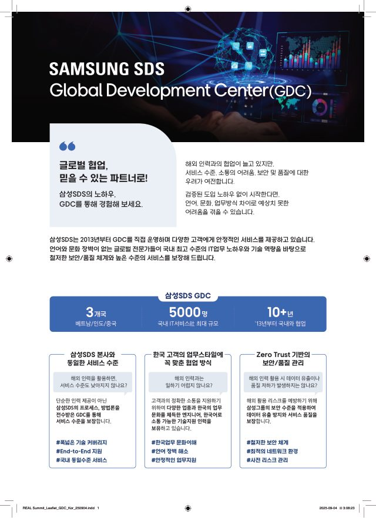
삼성SDS · GDC 리플릿 (2025) · 1쪽
숫자 세 개로 규모를 보여 준 뒤 서비스를 설명합니다.
사업성장연구소라면포트폴리오 쪽 첫 줄에 '60여 개' 같은 숫자 하나.
자료 원본 페이지 ↗끝은 '궁금한 점'과 '연락하는 법'. 망설이는 이유를 먼저 풀어 주고 QR 하나로 모읍니다.
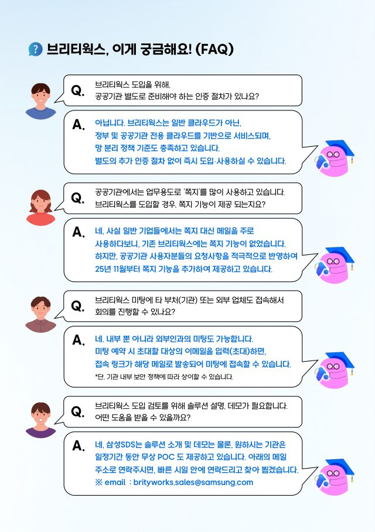
먼저 보세요삼성SDS · 브리티웍스 공공 브로슈어 (2025, A4 인쇄용) · 10쪽
'궁금하신가요?(FAQ)' — 도입 전에 걱정할 질문을 미리 꺼내 답합니다.
사업성장연구소라면'매출을 보장하나요?' '어디까지 맡길 수 있나요?' 같은 솔직한 질문 세 개.
자료 원본 페이지 ↗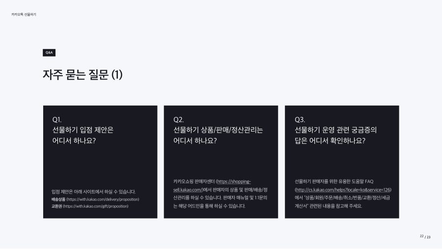
카카오 · 카카오톡 선물하기 서비스 소개서 (2024) · 22쪽
자주 묻는 질문을 어두운 카드 세 장으로 나란히.
사업성장연구소라면질문 카드 세 장 — 보장 · 범위 · 시작 방법.
자료 원본 페이지 ↗삼성SDS · 브리티웍스 공공 브로슈어 (2025, A4 인쇄용) · 11쪽
'더 자세한 정보는…' 연락처 세 줄 + QR 하나로 끝.
사업성장연구소라면뒤표지에 QR 하나를 크게, 연락처는 세 줄.
자료 원본 페이지 ↗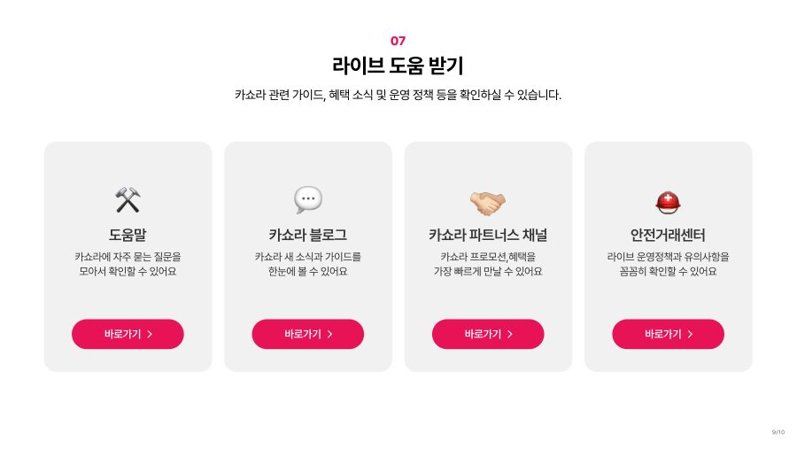
카카오 · 카카오쇼핑라이브 서비스 소개서 요약 (2024) · 9쪽
'도움 받기' — 할 수 있는 다음 행동을 카드와 버튼으로.
사업성장연구소라면'무료 검토 신청' 한 가지 행동만.
자료 원본 페이지 ↗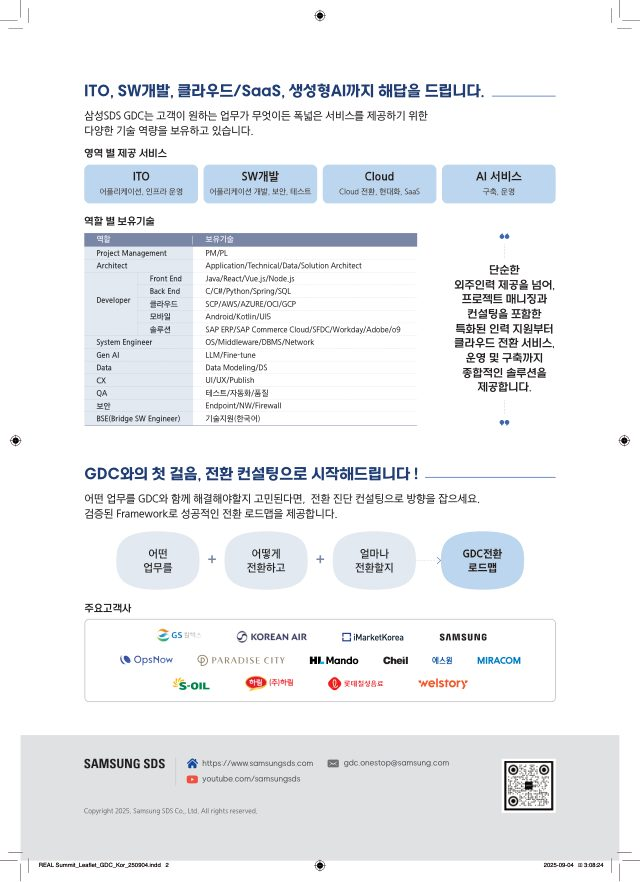
삼성SDS · GDC 리플릿 (2025) · 2쪽
'첫 걸음은 전환 컨설팅' — 상담 자체를 첫 번째 상품처럼 내놓습니다.
사업성장연구소라면무료 검토를 '사업성장의 첫 단계'로.
자료 원본 페이지 ↗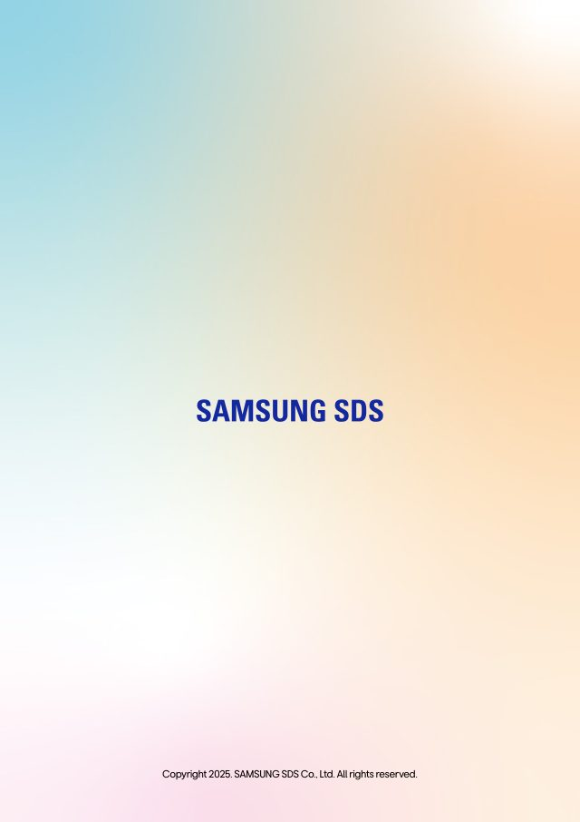
삼성SDS · 브리티웍스 공공 브로슈어 (2025, A4 인쇄용) · 12쪽
뒤표지는 그라데이션과 로고만 남겨 여운을 줍니다.
사업성장연구소라면뒤표지 아래쪽은 로고와 연락처만.
자료 원본 페이지 ↗유리 조형 표지(그라데이션) → 질문으로 여는 공감 → '왜 우리' 숫자 칸 → 해 주는 일을 같은 틀로 → 사례 → 함께한 곳·QR → 질문 카드와 연락처.
A4 인쇄 브로슈어의 흐름이 우리 8쪽과 가장 가깝고, 홈페이지 유리 조형이 삼성SDS의 3D 오브젝트 역할을 그대로 합니다. 마지막 질문 카드가 '매출 보장?' 같은 망설임을 미리 풀어 줍니다.
한 줄 약속 표지 → '왜 도입해야 할까요?' 이유 세 개 → 고객 이름 → 하는 일 격자 → QR.
3단 접지로 가볍게 가고 싶을 때. 대신 사례 이야기가 들어갈 자리가 좁습니다.
파란색 한 가지로 칠한 표지 → 감정 장면 사진 → 검은 칸 숫자 → 질문 카드.
가장 과감하고 브랜드 색이 강하게 남습니다. 대신 사진이 많이 필요해 이번 주 안에는 뽀뽀뜨 일지 이미지를 돌려 써야 합니다.
대표님이 주신 첫 장 문장, '막연함'을 악당으로 둔 이야기 순서, 해 주는 일 네 칸, 사례 이야기와 서비스별 QR, 질문 카드까지 넣었습니다.